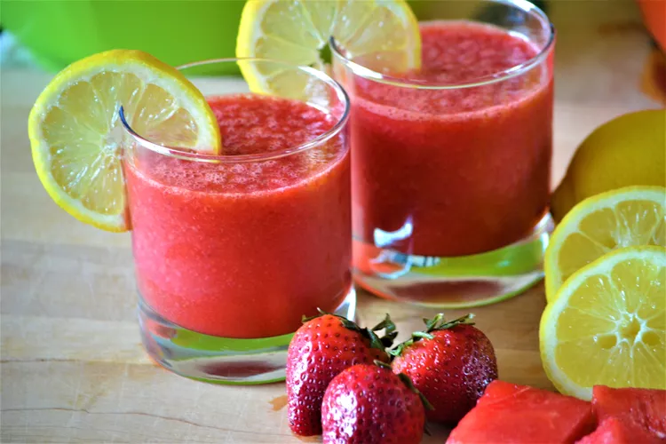

Watermelon and Strawberry Lemonade

Description
This strawberry and watermelon lemonade recipe simply blends fresh fruit into a drink!
It's best serve cold over ice.
Ingredients
- 8 cups cubed seeded watermelon
- 1 cup fresh strawberries, halves
- 1/2 cup fresh lemon juice
- 1 cup white sugar
- 2 cups water
Steps
- Combine watermelon, strawberries, lemon juice, sugar, and water in a blender.
- Blend until smooth.
Back Home